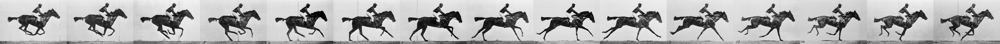

Eadweard Muybridge was a pioneer in photography. In 1872, the former governor of California, Leland Stanford, a businessman and race-horse owner, hired Muybridge for some photographic studies. He had taken a position on a popularly debated question of the day – whether all four feet of a horse were off the ground at the same time while trotting. Muybridge began experimenting with an array of 12 cameras photographing a galloping horse in a sequence of shots (see above).
